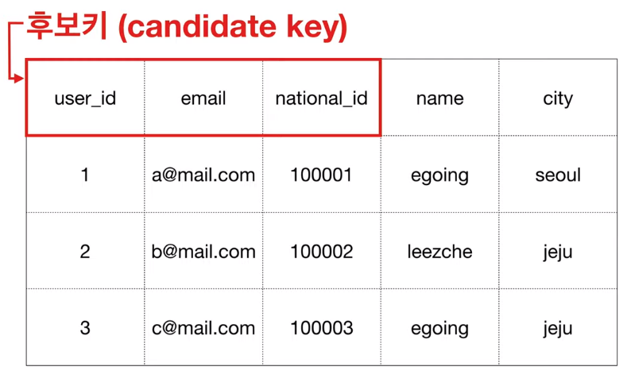
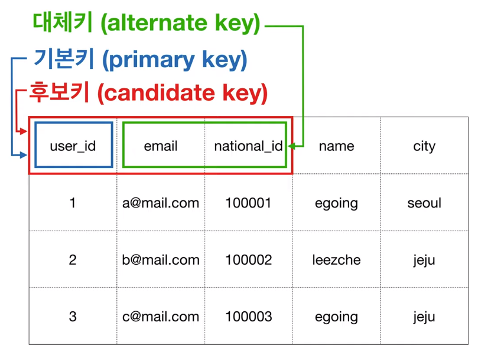
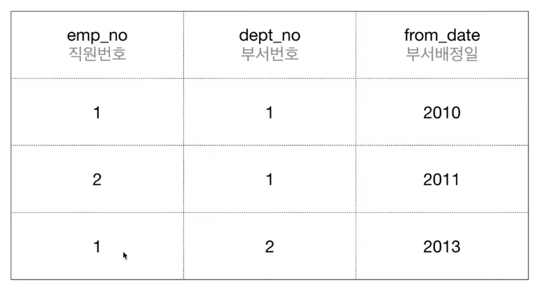
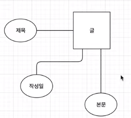
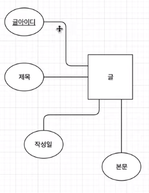
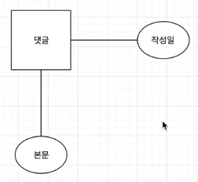
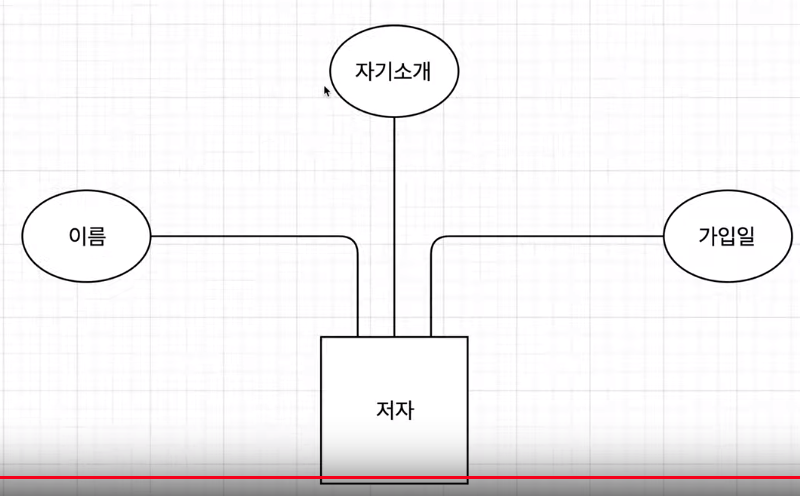
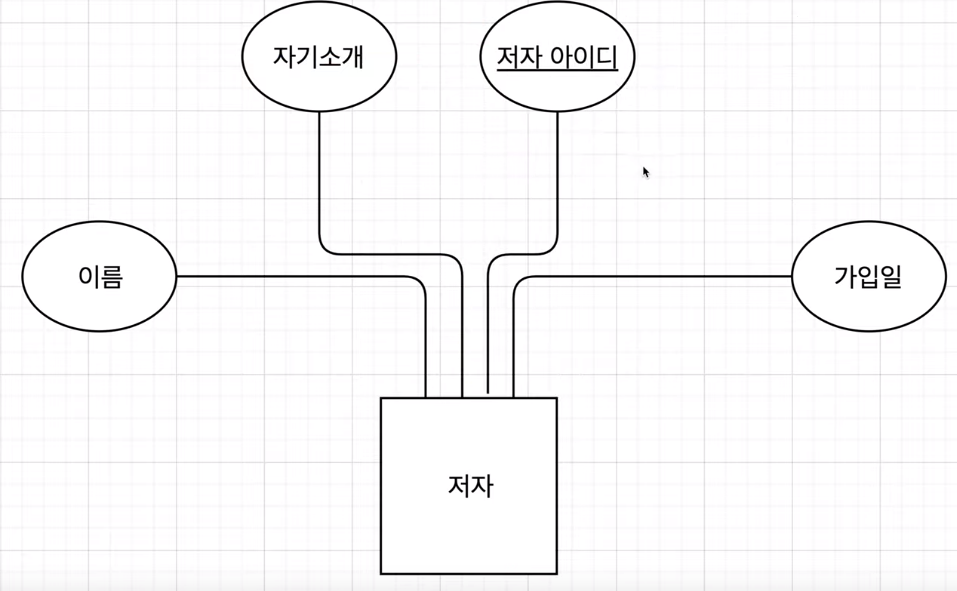

This is personal study note
Copyright and original reference:
https://www.youtube.com/watch?v=4i3OUdHqMWc&list=PLuHgQVnccGMDF6rHsY9qMuJMd295Yk4sa
================================================================================
After define "entities" and "attributes", you should define "identifier" from "attributes of entities"
================================================================================
Entity1
attribute1 attribute2
Entity2
attribute1 attribute2
For example, let's say identifier of Entity1 is attribute1
For example, let's say identifier of Entity2 is attribute1
================================================================================
Identifier should be unique, and identifier will become primary key
The role of identifier is for the user to enable to target "specific object"
so that that user can do some tasks on that "specific object"
================================================================================

Candidate key: which potentially can be primary key
================================================================================

Alternate keys: can be used to be hooked as secondary index for performance enhancement
================================================================================
Composite key

"Employee 1" can be involved in "dept 1" and "dept 2",
Single "emp_no" column can't identify "row"
Single "dept_no" column can't identify "row"
"emp_no" + "dept_no" can identify "row"
"emp_no" + "dept_no" is called composite key in this scheme
================================================================================
Look at the "Text" entity

There is no candidate key for PK
In that case, you need to create "artificial key" for PK (which is decorated by underline)

================================================================================
Look at the "Reply" entity

There is also no candidate key for PK
In that case, you need to create "artificial key" for PK
================================================================================
Look at the "Author" entity

